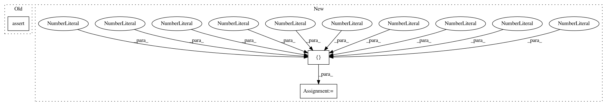

e63d275e097c007d5711f8f200edc30f3b0f72c5,scipy/linalg/tests/test_sketches.py,TestClarksonWoodruffTransform,test_sketch_rows_norm,#TestClarksonWoodruffTransform#,51
Before Change
err = np.linalg.norm(self.dense_big_matrix) - np.linalg.norm(sketch)
if err > self.threshold:
n_errors += 1
assert_(n_errors <= self.n_max_errors)
After Change
// we pass all/almost all the tries
n_errors = 0
seeds = [1755490010, 934377150, 1391612830, 1752708722, 2008891431,
1302443994, 1521083269, 1501189312, 1126232505, 1533465685]
for seed_ in seeds:
sketch = clarkson_woodruff_transform(
self.dense_big_matrix,
In pattern: SUPERPATTERN
Frequency: 3
Non-data size: 3
Instances
Project Name: scipy/scipy
Commit Name: e63d275e097c007d5711f8f200edc30f3b0f72c5
Time: 2017-09-12
Author: jordimontes@acm.org
File Name: scipy/linalg/tests/test_sketches.py
Class Name: TestClarksonWoodruffTransform
Method Name: test_sketch_rows_norm
Project Name: IBM/adversarial-robustness-toolbox
Commit Name: e06fa429553cd8a183f4fe57ea07e311b4f6ef4e
Time: 2020-01-15
Author: beat.buesser@ie.ibm.com
File Name: tests/classifiers/test_tensorflow.py
Class Name: TestTensorFlowClassifier
Method Name: test_predict
Project Name: IBM/adversarial-robustness-toolbox
Commit Name: ae3b0c965de92347b0c0be08aa29df0215572f89
Time: 2019-08-19
Author: beat.buesser@ie.ibm.com
File Name: tests/classifiers/test_ensemble.py
Class Name: TestEnsembleClassifier
Method Name: test_predict